TITLE
Provide a concise title that captures the essence of your research focus and computational design approach. The title should be specific enough to convey your project's scope while remaining accessible to both technical and non-technical audiences.
Provide a concise title that captures the essence of your research focus and computational design approach. The title should be specific enough to convey your project's scope while remaining accessible to both technical and non-technical audiences.
PHASE 1 >> Open Material Library: A BIM Plugin for Local Material Inventory
Designing with locally available, reusable materials to reduce environmental impact
PHASE 2 >> Material Memory Library: A BIM Plugin for Encoding Cultural Metadata¹
Designing with materials that embody place, heritage, and significance
1Dual Degree Capstone project extends over a two-year period.
PROJECT TIMELINE
A project timeline should provide a high-level overview of the major phases, key milestones, and general timeframes for project completion. It must present the overall project structure and sequence of activities in a clear, accessible format that communicates the project's scope, duration, and critical stages to stakeholders and team members.
A project timeline should provide a high-level overview of the major phases, key milestones, and general timeframes for project completion. It must present the overall project structure and sequence of activities in a clear, accessible format that communicates the project's scope, duration, and critical stages to stakeholders and team members.
Sum 2025
Fal 2025
Spr 2026
Sum 2026
Fal 2026
Spr 2027
Phase 1 , Phase 2 , Toolkit .
RESEARCH QUESTIONS
What questions does your project raise? What are you curious about? Does your work connect to societal discussions and debates taking place at the moment? Does your work touch on policy proposals for the future of technology and its regulation? Does your research question a socio-technical problem?
What questions does your project raise? What are you curious about? Does your work connect to societal discussions and debates taking place at the moment? Does your work touch on policy proposals for the future of technology and its regulation? Does your research question a socio-technical problem?
How can BIM's material intelligence be reimagined beyond efficiency driven algorithms to support considerate architectural decision making?
Open Material Library...
How can open-source data on local material availability be integrated into BIM to algorithmically promote material reuse without compromising on performance or design intent?
On Memory Material Library...
How can BIM integrate intelligent material selection to better align efficiency with responsibly subjective, place-based design?
KEYWORDS
Select six keywords that define the core concepts, technologies, methods, or theoretical frameworks central to your project. These keywords should function as entry points for understanding your work and position it within relevant academic and professional discourse.
Select six keywords that define the core concepts, technologies, methods, or theoretical frameworks central to your project. These keywords should function as entry points for understanding your work and position it within relevant academic and professional discourse.
Building Information Modeling (BIM) >
Architectural Ethics >
Life Cycle Analysis (LCA) >
Placelessness >
Efficiency Bias >
Design Intent >
INTERSECTING FIELDS
Identify three distinct fields or disciplines that converge in your project, positioning your work at their intersection. These fields might include areas such as architecture, computer science, sociology, data visualization, urban planning, or media studies, among others.
Identify three distinct fields or disciplines that converge in your project, positioning your work at their intersection. These fields might include areas such as architecture, computer science, sociology, data visualization, urban planning, or media studies, among others.
< Algorithm Ethics >
The study of the moral implications and social impact of algorithms in decision-making and technology.
< Architectural Phenomenology >
An approach to architecture that emphasizes human experience, perception, and the sensory qualities of space.
< Sustainable Design >
Design focused on minimizing environmental impact through responsible resource use, energy efficiency, and long-term ecological balance.
HISTORICAL LINEAGE
What historical lineage does your work emerge from? What trajectory are you continuing? Could include: tools, theory, design, aesthetics, experiments, political debates, societal events.
What historical lineage does your work emerge from? What trajectory are you continuing? Could include: tools, theory, design, aesthetics, experiments, political debates, societal events.
VIRTUAL DESIGN & CONSTRUCTION USING BIM CURRENT & FUTURE PRACTICES
by Lennart Anderson, Kyla Farrell, Oleg Moshkovich, Cheryle Cranbourne

"[Speculating on the future of VDC]...A Revit plugin connects building components to material database, so short feedback loops can inform the designer about the environmental impact of different material selections" pg.272
"Traditional tools [for construction] are fragmented and not sufficient in describing the complex buildings of today and tomorrow...successful implementation of VDC is hinging on how well developing technologies interact with design and construction needs" pg.274
"Buildings should not be solely defined by the sum of their parts, but by the parts and assemblies themselves and their roles within greater systems and processes—from conception, 3-D creation, through to construction and facilities management" pg.274
AN INTRODUCTION TO VISUAL THEORY AND PRACTICE IN THE DIGITAL AGE
by Brooke Barnett, David Copeland, Harlen Makemson, Phillip Motley

"Data driven content management systems...allow content authors a way to distribute information without needing to understand the technical intricacies of Web development" pg.5-6
"How does the interface...between your audience and the content you want them to digest affect their ability to do so?" pg.11
"Clients and organizations...will demand that the content...be technically sophisticated and visually compelling" pg.164
GRAPH VISION: DIGITAL ARCHITECTURE'S SKELETONS
by Theodora Vardouli
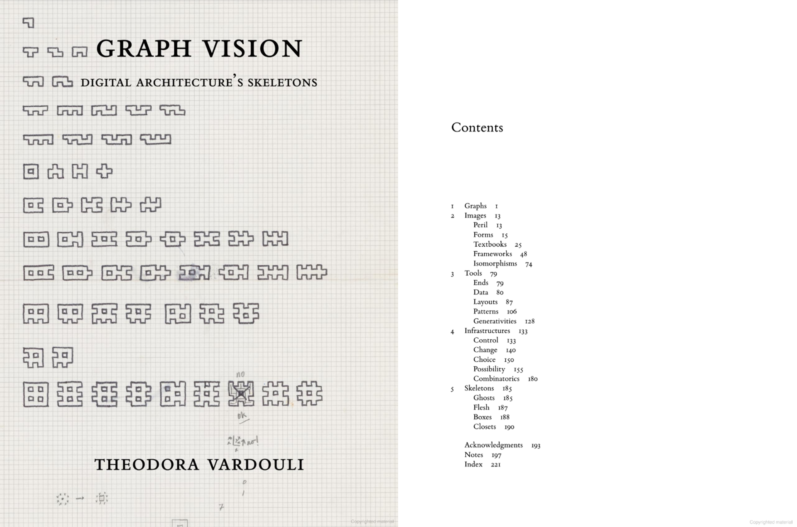" style="width: 275px; height: auto; display: block; margin: 0 auto;">"One might be tempted to interpret digital architecture's reliance on skeletal structures as an effect of how digital electronic computers work. This book rejects the proposition that the dovetailing of architecture and structural abstraction—on a cultural, discursive, and operational level—is an effect of digital computers' technical functioning. Instead, it contributes a multifaceted story of architects' turn toward the structural underpinnings of their work as the very condition that made it possible to consider architectural design as a form of computation" pg.2
"...while this coda could not possibly characterize architecture's digital 'culture,' 'turn,' era, age, epoch with any semblance of historical or analytical precision nor foretell its fast-changing futures, it can discern the absences that construct it: the things that have been lost and those that have been hidden" pg.185
YOUR COMMUNITY OF PRACTICE
A map of who else is working in this space now or recently, what are they doing, what questions are they asking, what approaches have they taken, how do you position yourself in relation to them. This is not an exhaustive list of everyone connected to your topic, rather it is a selection of the projects and practices and authors who are important to your thinking, including who you may disagree with or intend to critique. What is your relationship to your precedent study, how has it informed your thinking? Is your project going to be an advancement of the precedent or a reinterpretation, a subversion, a rejection, a reinterpretation, a fork, a contestation, an alternative proposal? Is the audience for your project the same as your community of practice or different?
A map of who else is working in this space now or recently, what are they doing, what questions are they asking, what approaches have they taken, how do you position yourself in relation to them. This is not an exhaustive list of everyone connected to your topic, rather it is a selection of the projects and practices and authors who are important to your thinking, including who you may disagree with or intend to critique. What is your relationship to your precedent study, how has it informed your thinking? Is your project going to be an advancement of the precedent or a reinterpretation, a subversion, a rejection, a reinterpretation, a fork, a contestation, an alternative proposal? Is the audience for your project the same as your community of practice or different?
CASE STUDY 1 >> MATERIAL MATTERS
by Grant Gibson and William Knight
Material Matters is a cross-media platform that explores the vital role of materials in shaping the future of architecture, design, and manufacturing. Through the internationally acclaimed Material Matters Podcast, the renowned Material Matters Fair, and industry-leading consultancy and special projects, Material Matters connects brands, designers, and manufacturers with a forward-thinking audience passionate about material innovation.
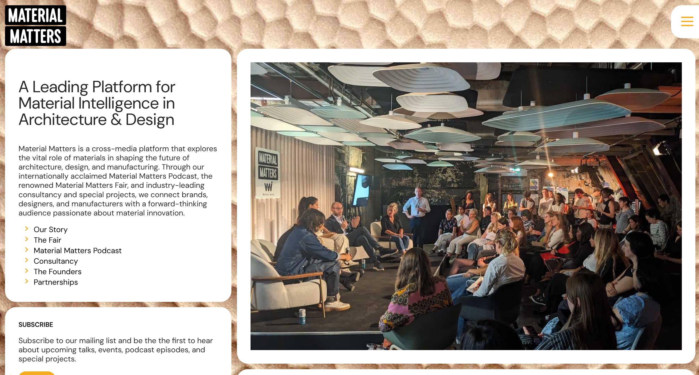" style="width: 600px; height: auto; display: block; margin: 0 auto;">
https://materialmatters.design/about#partnerships-section
CASE STUDY 2 >> MADASTER
by Thomas Rau and Pablo van den Bosch
Madaster believes that lasting change starts with redefining waste. They believe that every material holds value and can be reused endlessly, helping create a world where sustainability becomes the standard, not the exception. They offer services in reducing carbon footprint, enabling circularity, calculating residual value, and unlocking regulatory compliance.
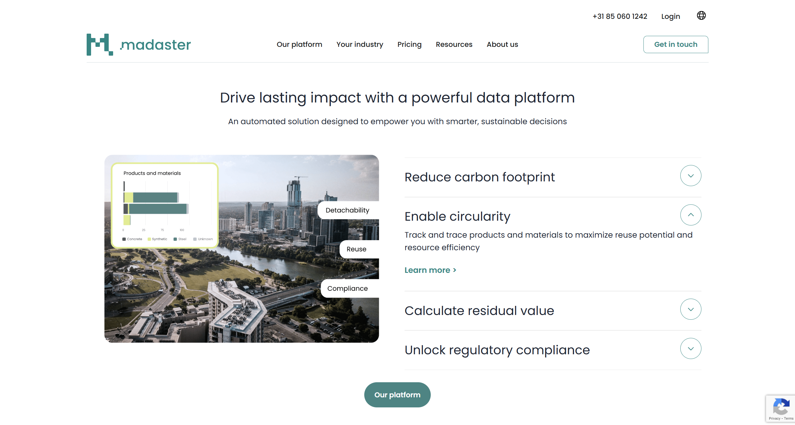" style="width: 600px; height: auto; display: block; margin: 0 auto;">
https://madaster.com/inspiration/
CASE STUDY 3 >> CONSTRUCTION MATERIAL LIBRARY
by FlowBIM
A comprehensive digital database containing manufacturer-specific building material data including density, thermal conductivity, and thickness specifications. This resource enables direct integration of real material parameters into wall components with automatic U-value calculations that adjust dynamically as materials or thicknesses change. The library features thickness selection filters for optimal material combinations, manufacturer datasheet links for additional information, and bilingual support in English and Estonian while maintaining consistent coverage across EU countries.
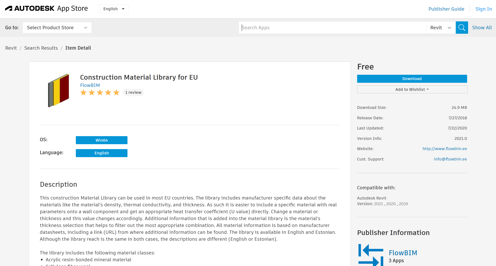" style="width: 600px; height: auto; display: block; margin: 0 auto;">
https://apps.autodesk.com/RVT/en/Detail/Index?id=6825140766630953113&appLang=en&os=Win64
PRECEDENT STUDY >> HAQUE TAN
by Usman Haque, Ling Tan
My precedent study primarily helped me think about how software can facilitate collaboration between multiple people to complete a collective task. In the context of my capstone, API databases of local materials are the "people" that can be accessed by the user to make informed creative decisions. I am also taking inspiration from the philosophy HAQUE TAN has: "Designing for Shared Futures".
https://haquetan.com/
https://drmimi47.github.io/Precedent-Study/
SITUATED TECHNOLOGY
Articulate how your project engages with the concept of situated technology, considering how computational tools and methods are embedded within specific social, cultural, and political contexts. This section should demonstrate your understanding of technology as a socially constructed phenomenon rather than a neutral tool.
Articulate how your project engages with the concept of situated technology, considering how computational tools and methods are embedded within specific social, cultural, and political contexts. This section should demonstrate your understanding of technology as a socially constructed phenomenon rather than a neutral tool.
My approach to computational design prioritizes cultural respect, social responsibility, and ethical awareness. While I value creative combinations of existing tools to generate new insights, I believe this must be grounded in a critical understanding of the biases embedded in current systems. By examining what today's software includes, omits, and assumes, I aim to develop intelligent, responsive design methods that serve communities rather than exploit them.
Critical Foundation
a semester of reflective research
Algorithm Decision Logs == Transparent Platforms == Speckle
Open-Source Tools == Decentralization == QGIS
Circularity == Material Passports == Madaster
METHODS
Which software techniques, data practices, theoretical approaches, art styles, design tactics, conceptual acts, or material processes are emerging as pertinent to your practice? Are you planning to use qualitative and/or quantitative methods? What are the more important components of your project: physical, material, computational, written, aesthetic?
Which software techniques, data practices, theoretical approaches, art styles, design tactics, conceptual acts, or material processes are emerging as pertinent to your practice? Are you planning to use qualitative and/or quantitative methods? What are the more important components of your project: physical, material, computational, written, aesthetic?
I plan to employ both qualitative and quantitative methods to evaluate spatial and material narratives alongside data-driven recommendations and mapping. I am interested in leveraging open-source material databases, spatial metadata, and circular economy datasets to explore how building elements can become context-aware and materially responsive.
The project's critical components include:
< [Aforementioned] Toolkit >
< user Feedback >
< System Management >
COMPUTATIONAL DESIGN EXPERIMENTS
Include any images, visualizations, simulations, interactive demos, sketches, photos, models, diagrams, studies, physical experiments authored by you during the semester that are pertinent to your ongoing interests and project development.
Include any images, visualizations, simulations, interactive demos, sketches, photos, models, diagrams, studies, physical experiments authored by you during the semester that are pertinent to your ongoing interests and project development.
ARCHA4163 >> COMP DESIGN WORKFLOWS
Although the data of NYC drinking fountains is not particularly relevant, this assignment has helped me learn the basics of API integration, handling large data sets, and the utilization of tools like Mapbox to create a cohesive and interactive representation of open-data.
ARCHA4162 >> COMP MODELING
Learning Grasshopper's visual coding interface is great practice for eventually using Dynamo for Revit and data management. On top of that, the custom tool for Computational Modeling can serve as a "proof-of-concept" where it can perform a preview of the Open Material Library tool, but it is largely for demonstration purposes rather than a software that I will continue to use in my capstone.
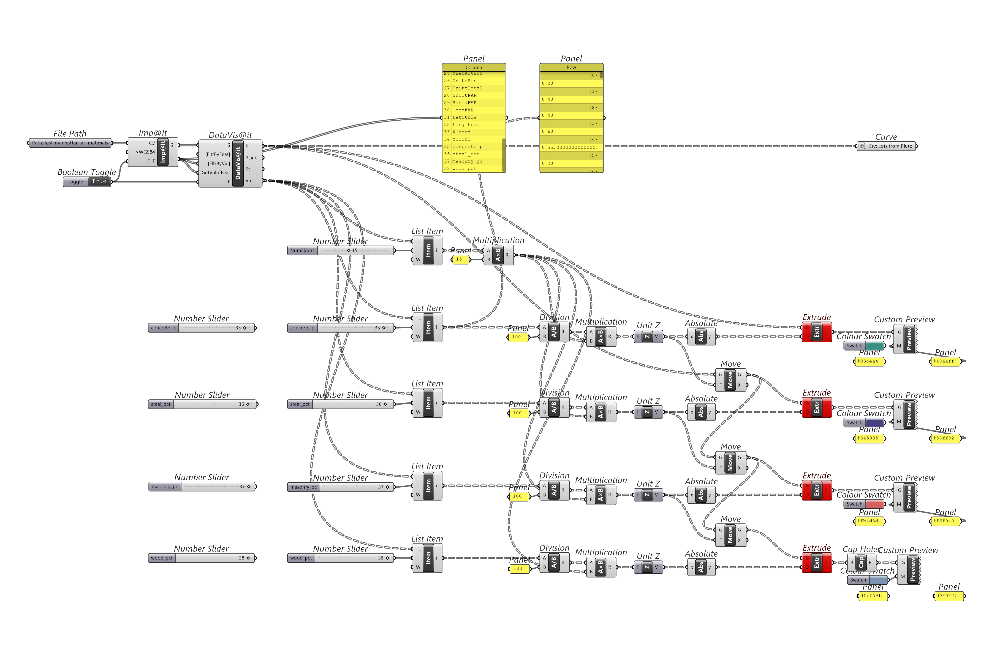
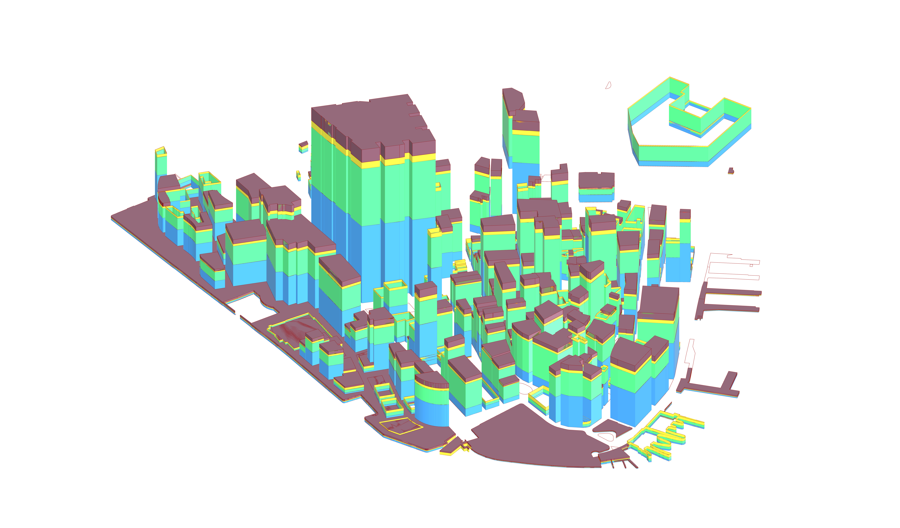
VISUAL REPRESENTATION
What aesthetic modes are inspiring to you. In CDP, aesthetics is understood as a means of sensory investigation. Aesthetics is part of how you build an argument and how you communicate it. What is your visual language and representational style? A visual language can include physical and material qualities as well as screen and image based work. Does your visual representation situate you in a specific community?
What aesthetic modes are inspiring to you. In CDP, aesthetics is understood as a means of sensory investigation. Aesthetics is part of how you build an argument and how you communicate it. What is your visual language and representational style? A visual language can include physical and material qualities as well as screen and image based work. Does your visual representation situate you in a specific community?
The project's scope requires a cohesive visual language that extends from urban mapping visualizations to the user interface elements within the Revit plugin. Additionally, presenting the large raw datasets from open-source projects through visually engaging representations would enhance transparency by making the algorithm's sorting and filtering mechanisms clearly visible to users, fostering trust and understanding in the underlying computational processes.
CASE STUDY 1 >> MATERIAL LOCALE
by Zihan Xiang, Jun Yue, and Jiaxin Yue

" style="width: 600px; height: auto; display: block; margin: 0 auto;">
https://bpro2023.bartlettarchucl.com/rc1-monumental-wastelands-hyper-local/material-locale
CASE STUDY 2 >> NYC BUILDING MATERIALS
by Hao Lee
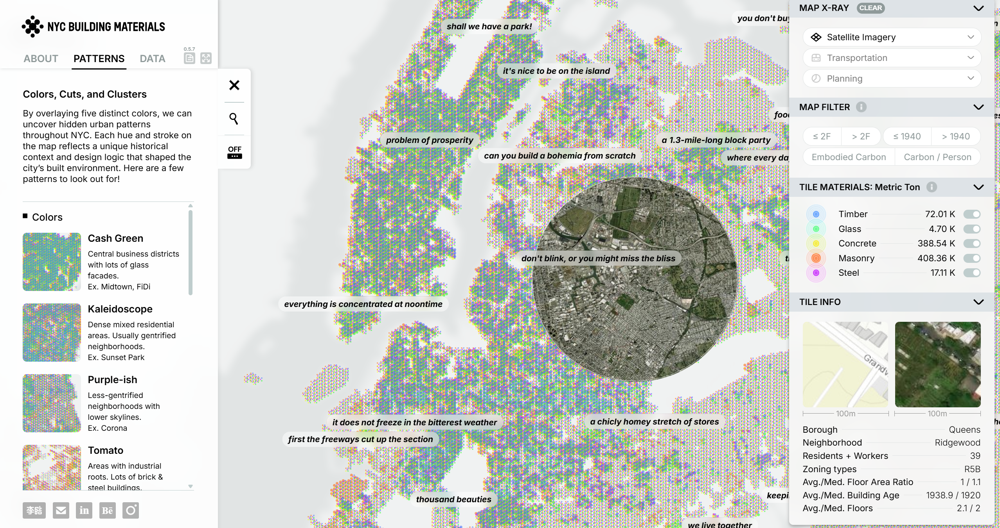" style="width: 600px; height: auto; display: block; margin: 0 auto;">
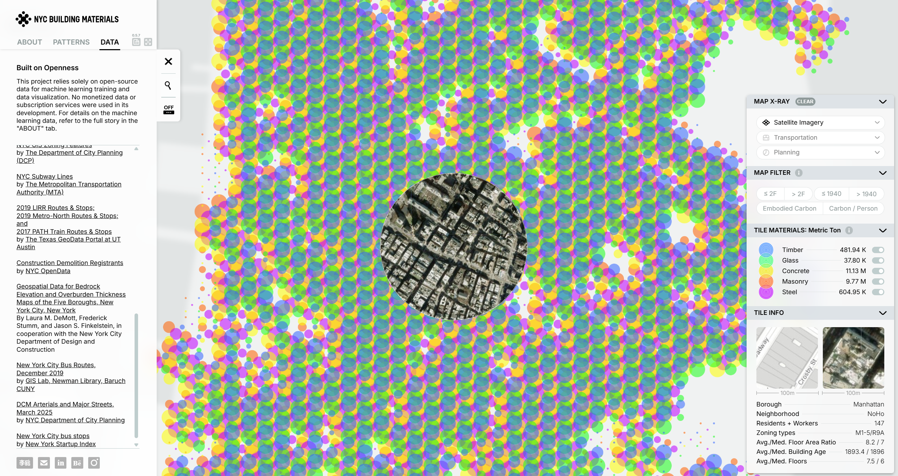" style="width: 600px; height: auto; display: block; margin: 0 auto;">
https://gsapp-cdp.github.io/archive/projects/2025/nyc-building-materials/
CASE STUDY 3 >> CULTURE UNDER COMPLEX PERSPECTIVE
by Lin Qi, Yuwei Wang, Jindong Chen, Mengjie Liao, Jian Zhang
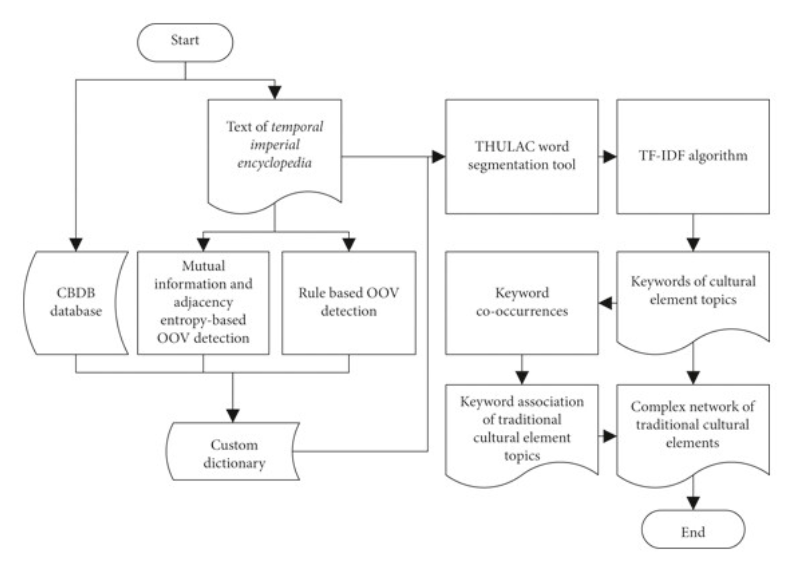" style="width: 600px; height: auto; display: block; margin: 0 auto;">
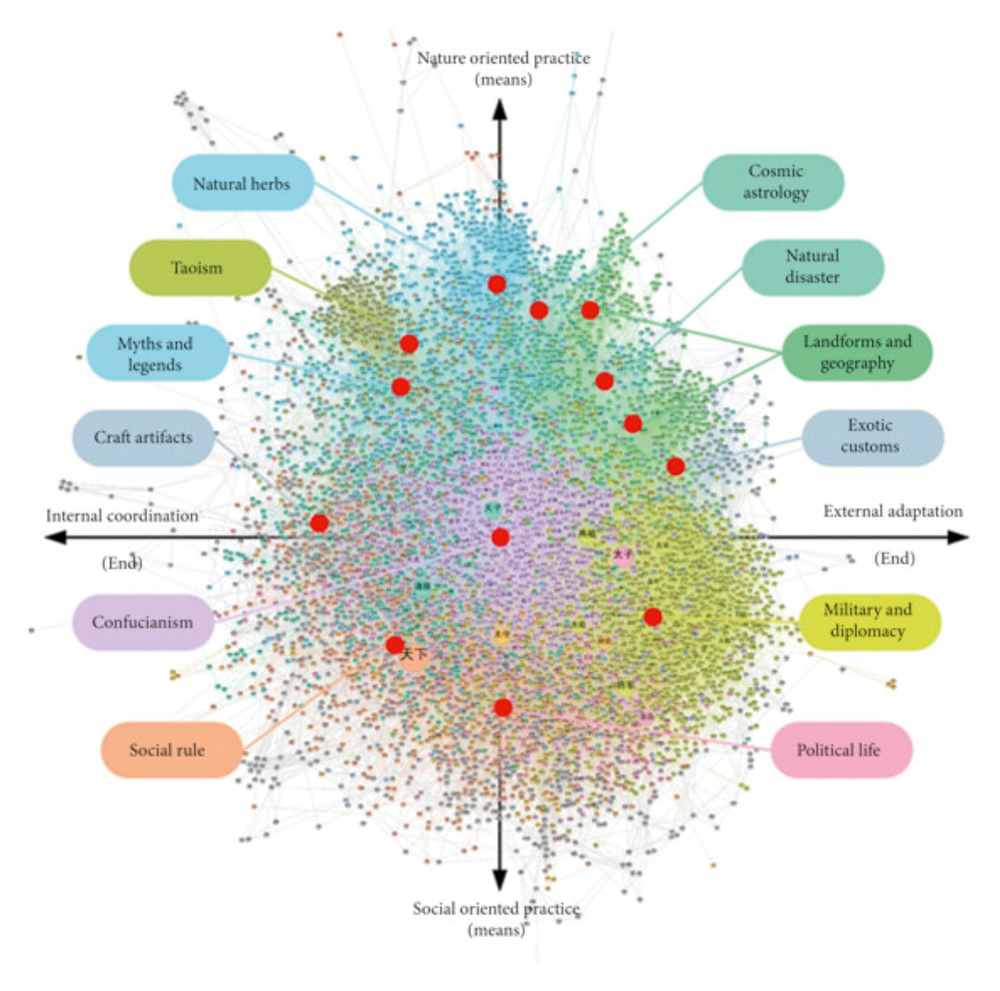" style="width: 600px; height: auto; display: block; margin: 0 auto;">
https://onlinelibrary.wiley.com/doi/10.1155/2021/6693753
RHETORICAL ARGUMENT
Clearly articulate the central argument or position your project advances, considering how computational design can serve as a form of persuasion or critique. Your argument should address both the technical possibilities of your approach and its broader implications for design practice or society.
Clearly articulate the central argument or position your project advances, considering how computational design can serve as a form of persuasion or critique. Your argument should address both the technical possibilities of your approach and its broader implications for design practice or society.
Digital design tools, particularly BIM, must evolve from passive catalogs of construction components into active, ethical frameworks for architectural decision-making. I argue that BIM should no longer serve merely to document what is built, but instead to shape how we build, rooted in material responsibility and cultural relevance. Buildings must move away from being assembled through abstracted, globally sourced systems and instead emerge from local, often overlooked resources such as salvaged timber, reused brick, or urban waste.
CAPSTONE PROPOSAL
This is not fixed or final, but should provide the jury with a sense of where you might take this work next semester, and what form a final project could look like. Withhold the urge to propose a solution to a problem you do not yet fully understand.
This is not fixed or final, but should provide the jury with a sense of where you might take this work next semester, and what form a final project could look like. Withhold the urge to propose a solution to a problem you do not yet fully understand.
MATERIAL IN-SITE
A context-encoded Revit plugin to build a more considerate architecture.
My project proposes a new layer of dimensionality in BIM that encodes circular material intelligence and locality-aware logic into the design process. This transforms design from a matter of form into a matter of values, where each element is selected not only for performance, but for provenance. BIM can become more than a tool for efficiency or visualization; it can be a medium for ethical and situated architectural thinking.
VDC TOOLS
+ the 9th Revit domain
Model Authoring Tool , Fields of Study and Collab Tools , Capstone: Material InSite , Post-Production Tools .
VDC Practice Diagram
+ open material and material culture libraries

FILTER DIAGRAM
embedding cultural metadata
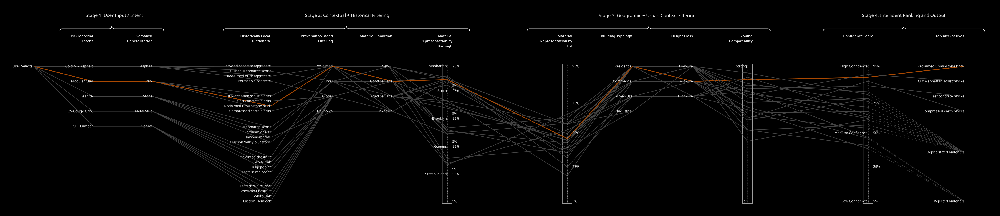
THE CHALLENGE
What challenges do you foresee in the development of this project? Are they challenges of learning specific technical skills, building relationships and finding collaborators, improving your visual design skills, finding or creating a dataset, etc. Be honest with yourself and the audience about where your current skills sit in relation to your ambitions, and what your plan is moving forwards.
What challenges do you foresee in the development of this project? Are they challenges of learning specific technical skills, building relationships and finding collaborators, improving your visual design skills, finding or creating a dataset, etc. Be honest with yourself and the audience about where your current skills sit in relation to your ambitions, and what your plan is moving forwards.
CONCERNS >>
Need to connect tools across platforms (Python → C# → Revit/Dynamo)
Limited experience with APIs and data exchange protocols
Machine learning knowledge is mostly theoretical
Translating design thinking into algorithms is still a challenge
PLANS >>
Prioritize learning C# and Revit API through community tutorials
Strengthen skills in ML: preprocessing, algorithms, and validation
Use my dual degree to bridge ethics, architecture, and computation
Aim for fluency in cross-platform workflows, not just tool proficiency
CREDITS
Acknowledge the sources, tools, collaborators, and resources that have contributed to your project development and research process. This section should include software platforms, datasets, academic references, mentors, peers, and any other individuals or institutions whose work has informed or supported your computational design practice.
Acknowledge the sources, tools, collaborators, and resources that have contributed to your project development and research process. This section should include software platforms, datasets, academic references, mentors, peers, and any other individuals or institutions whose work has informed or supported your computational design practice.
https://gramaziokohler.arch.ethz.ch/web/news/e/actualNews/0/0/0.html
https://gramaziokohler.arch.ethz.ch/web/news/e/actualNews/0/0/0.html
https://bpro2023.bartlettarchucl.com/rc1-monumental-wastelands-hyper-local/material-locale
https://www.philipbeesleystudioinc.com/sculptures/
https://kilthub.cmu.edu/collections/Master_of_Computational_Design/5279693
https://dbt.arch.ethz.ch/publication/
https://forensic-architecture.org/investigation/tear-gas-tuesday-in-downtown-portland
https://cyberneticzoo.com/robots-in-art/1969-70-seek-nicholas-negroponte-american/
https://haquetan.com/growing-riversiders/
https://www.dear-data.com/theproject
https://michael-hansmeyer.com/projects
https://www.interactivearchitecture.org/
https://www.matterdesignstudio.com/#/patty-jan/
https://starts-prize.aec.at/en/winners/winners2025/
https://gsapp-cdp.github.io/archive/
https://bpro2023.bartlettarchucl.com/rc1-monumental-wastelands-hyper-local/vernacular-contract
https://www.autodesk.com/support/technical/article/caas/tsarticles/ts/7I2bC1zUr4VjJ3U31uM66K.html